Product Designer
Portfolio - StowGenie
StowGenie
기여도 70%
StowGenie는 해운 플래너들이 컨테이너 적재 작업을 효율적으로 계획할 수 있도록 돕는 솔루션입니다. 시각화된 인터페이스와 최적화된 적재 제안을 통해 시간과 비용을 절감합니다. 다양한 컨테이너 유형과 선박 조건을 반영하여 오류를 최소화하고 작업 효율을 극대화합니다.
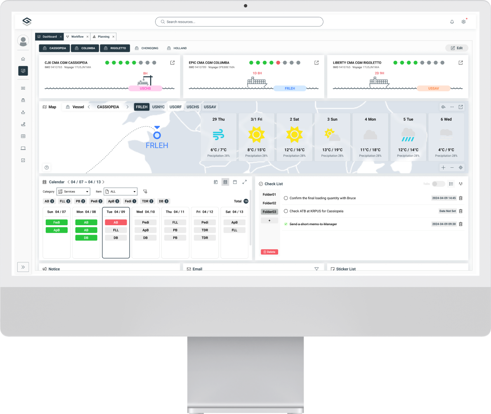
AS IS PROBLEM
기존 시스템 주요 문제점
배경설명
해운 선사 플래너들이 플래닝 작업에서 여러 불편함을 가지고 있었습니다. StowGenie 프로젝트는 비직관적인 UI, 통합 플랫폼 부재, 실시간 데이터 부족, 비효율적인 커뮤니케이션 등 기존 프로그램의 주요 페인포인트를 해결하고 해운 선사 플래너들의 작업 효율성을 개선하기 위해 설계되었습니다.
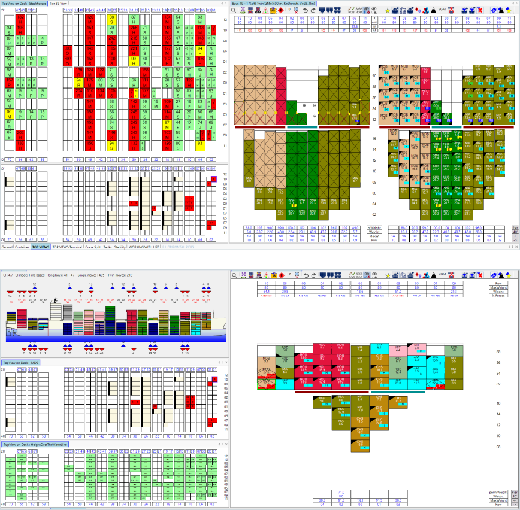
문제 정의
기존 솔루션에 불편함을 느끼나요?
84%
84%의 응답자는 기존 솔루션에
불편함을 느끼고 있다고 응답.
비직관적인 UI - 90%
기존 시스템의 UI 디자인이 오래되어 사용자가 시스템을 직관적으로 사용하는 데 어려움이 있습니다. 이로 인해 업무 효율성이 떨어지고, 사용자 경험이 불편해졌습니다.
통합 플랫폼의 부재 - 80%
여러 시스템에서 분산되어 있는 기능들을 하나의 통합된 플랫폼으로 관리하지 못하고, 다양한 프로그램을 사용해야 했습니다. 이로 인해 업무 흐름이 끊어지고, 효율적인 작업 수행이 어려워졌습니다.
가독성이 낮은 데이터 - 75%
실시간 데이터를 확인할 수 있는 워크플로우가 없어, 업무 진행 상태를 한눈에 파악하기 어려운 상태였습니다. 이로 인해 의사결정에 시간이 더 걸렸습니다.
대시보드 부재 - 70%
실시간 데이터를 확인할 수 있는 대시보드가 없어, 업무 진행 상태나 데이터를 한눈에 파악하기 어려운 상태였습니다. 이로 인해 업무 전략 수립에 시간이 더 걸렸습니다.
데이터 분석 도구의 부재 - 65%
복잡한 데이터 분석이 비효율적이고, 데이터를 파악하거나 효율적인 요약 및 수정을 하는 데 많은 시간 소요가 있었습니다. 이로 인해 업무 성과가 최적화되지 않았습니다.
Gamification의 부족 - 60%
게임화 요소가 없어서 직원들의 동기부여가 부족하고, 업무에 대한 참여도가 낮았습니다. 이를 통해 영업 효율성을 높이는 데 어려움이 있었습니다.
TO BE GOAL
프로젝트의 목표
이 프로젝트의 주요 목표는 고객사의 기능적 요구를 충족시키면서 사용자 중심의 새롭고 효율적인 경험을 제공하는 솔루션을 만드는 것이었습니다.
GOAL
브랜딩과 체계적인 UI 구현
브랜딩과 Atomic 디자인을 적용하여 체계적이고 일관된 UI를 구축.
흩어져 있는 여러 시스템 통합
기존 시스템과 새로운 커뮤니케이션 기능, 새로운 솔루션을 결합하여 효율적인 업무 관리를 구현.
통합된 솔루션의 실시간 대시보드 생성
실시간 대시보드를 통해 업무 상태와 영업 성과를 시각적으로 파악하고, 진행 상황을 실시간으로 모니터링.
데이터 시각화로 직관적인 인사이트 제공
가독성 낮은 데이터를 창의적으로 시각화하여 업무 진행 속도를 빠르게 하고, 정확한 의사결정을 지원.
AI 기반 데이터 분석 및 수정
엑셀 기반의 복잡한 데이터 처리에서 벗어나, 생성형 AI를 활용해 원하는 데이터와 통계를 빠르게 얻고 수정할 수 있는 시스템을 제공.
업무에 게임 요소 추가로 동기부여 증진
플래닝 업무에 게임 요소를 추가하여, 업무에 즐거움을 주고, 직원들의 동기부여를 향상.
주요 해결방안
브랜딩을 통한 UI 디자인 혁신
브랜딩을 바탕으로 Atomic 디자인 방법론을 적용하여 각각의 UI 요소를 일관되게 연결하고, 효율적으로 디자인합니다. 이를 통해 직관적인 사용자 경험을 제공하고, 업무 효율성을 극대화합니다.
#SOLUTION-01
커뮤니케이션과 업무 관리의 혁신적 결합
기존 솔루션과 새로운 방식의 커뮤니케이션 기능, 업무관리 솔루션(Workflow)을 추가하여 업무 흐름을 원활하게 합니다. 이를 통해 업무 효율성과 협업을 대폭 향상시킵니다.
#SOLUTION-02
실시간 대시보드와 개인화된 위젯 관리
사용자는 선박별 Workflow, 커뮤니케이션 현황, 배의 위치 등 실시간으로 확인할 수 있으며, 위젯 형식으로 개인 맞춤형 커스터마이징이 가능합니다. 이를 통해 업무 상황을 한눈에 파악하고, 효율적인 관리와 업무 최적화를 지원합니다.
#SOLUTION-03
선박 일정 시각화 및 직관적 업무 관리
선박 일정을 시각화하여 타임 프레임을 한눈에 쉽게 수정할 수 있게 하고, 업무 상태를 색상으로 직관적으로 표현하여, 업무 진행 상황을 빠르게 파악하고 효율성을 높입니다.
#SOLUTION-04
생성형 AI로 데이터 분석 및 실시간 수정
생성형 AI를 결합하여, 엑셀에서 다루기 힘든 복잡한 데이터를 AI를 통해 분석하고 원하는 정보를 실시간으로 생성 및 수정할 수 있게 합니다. 이를 통해 데이터 분석의 효율성을 높이고, 의사결정 속도를 대폭 향상시킵니다.
#SOLUTION-05
업무 처리에 게임화 요소 도입
랜덤으로 업무 처리하는 과정에 아이템 요소를 추가하여, 업무 등급을 정하고 상품을 제공하는 방식으로 직원 참여도와 업무 동기부여를 높입니다. 이를 통해 업무 효율성과 직원 만족도를 향상시킵니다.
#SOLUTION-06
SOLUTION 01
UI 통일성을 위한 브랜딩 전략
Atomic Design 방법론을 적용해 UI를 모듈화하고 일관성을 유지하며, 새로운 브랜딩을 반영하여 사용자 경험을 개선했습니다. 이렇게 Atomic Design과 브랜딩을 강조하면, 체계적인 디자인 접근과 브랜드 정체성 강화에 대한 부분을 명확히 전달할 수 있습니다.
LOGO
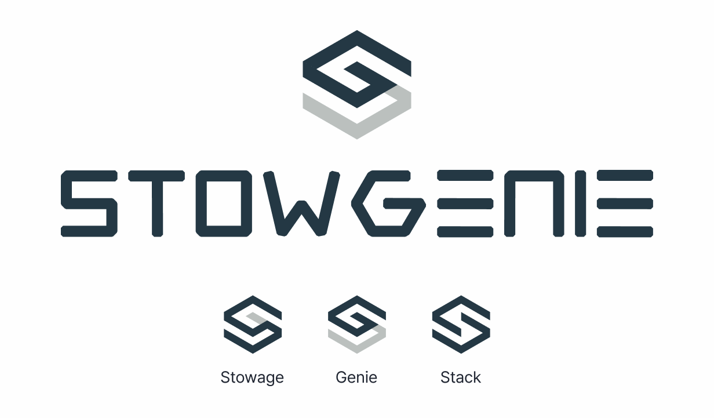
StowGenie 브랜드 아이덴티티 목표
StowGenie는 글로벌 운송을 위한 혁신적인 항만 솔루션을 제공하는 것을 목표로 합니다.
슬로건
StowGenie와 함께 마법의 항해를 시작해요 - 모든 컨테이너가 완벽한 위치를 찾는 그곳으로!
키워드
ingenious transformable, a perfect fit, reliable supply
디자인 정의
이 아이덴티티는 Stowage의 'S'와 Genie의 'G'를 상징할 뿐만 아니라 컨테이너를 적재하는 형태를 다양하게 나타낼 수 있는 시각적 유연성을 가진 로고로서 디자인 적용범위가 넓다는 강점을 지녔다. 신비롭고 깊은 바다를 연상시키는 짙은 네이비 색상과 보는 관점에 따라 평면적이면서도 입체적인 느낌을 자아내는 이미지 심볼 형태는 창의적이고 다양한 항만 솔루션을 제공하는 Stowgenie의 특성을 나타낸다.
색상
방법론
ATOMIC DESIGN
SOLUTION 02
통합 플랫폼 부재 - 커뮤니케이션
SOLUTION 02
통합 플랫폼 부재 - 커뮤니케이션
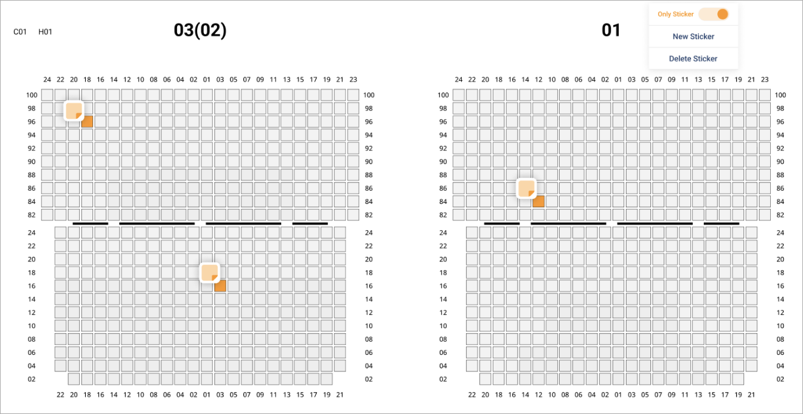
기존 이슈 확인 프로세스 (4단계)
스티커를 활용한 이슈 확인 프로세스 (1단계)
커뮤니케이션 기능 전환율
도입 전 스티커 기능
도입 후
만족도 조사
92%
약 92%의 사용자가
개선된 시스템에 만족
페인포인트
비효율적인 커뮤니케이션
메모와 이슈 관리가 체계적이지 않아 중요한 정보 공유가 어려움.
통합 플랫폼 부재
사내 공지사항, 이메일 등의 기능이 분산되어 업무 효율성이 저하됨.
제공된 솔루션
스티커 기능 도입
플래너가 특정 선박의 메모와 이슈를 쉽게 공유할 수 있도록 지원.
통합 커뮤니케이션 시스템
대시보드 내에서 공지사항, 이메일 등을 통합 관리할 수 있는 기능 제공.
사용자 반응
"스티커 기능 덕분에 팀원들과의 이슈 공유가 훨씬 쉬워졌습니다."
"공지사항과 이메일을 한곳에서 관리할 수 있어 업무가 더 체계적이고 효율적입니다."
SOLUTION 02
통합 플랫폼 부재 - 주요 기능 통합(Planning+Workflow)
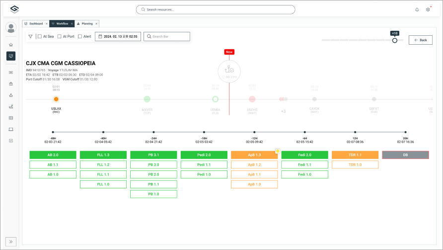
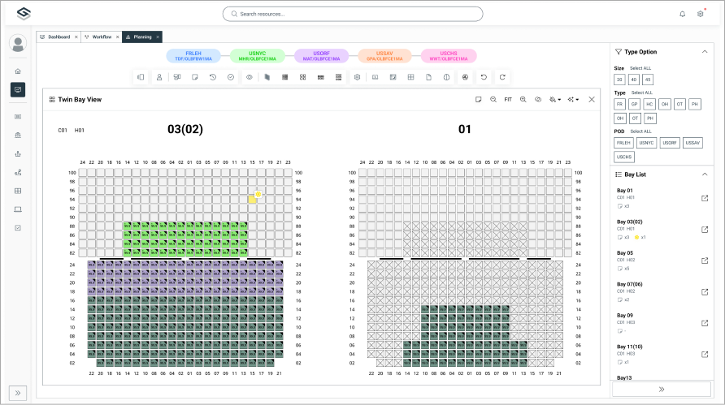
페인포인트
비효율적인 서류 작업
기존 고객사와 해운 회사는 서류 작업에 많은 시간을 소비하며, 이로 인해 업무 효율성이 떨어짐.
이메일 및 전화로 개별 처리
서류와 관련된 정보가 분산 관리되어, 업무 연속성이 부족하고 데이터 일관성이 결여됨.
제공된 솔루션
Planning과 Workflow 통합
플래닝 도구와 서류 작업을 하나의 플랫폼에서 관리 가능. 이를 통해 업무 효율성을 극대화.
실시간 문서 추적 및 관리
모든 서류를 Workflow에서 실시간으로 추적하고 관리하여, 업무 시간과 노력을 절감.
자동 업데이트 및 실시간 추적
자동 업데이트와 실시간 추적을 통해 작업 흐름을 유기적으로 관리.
유기적 작업 흐름 제공
플래닝 작업과 서류 처리를 하나의 시스템에서 처리하여, 업무의 흐름과 효율성을 크게 개선.
사용자 반응
"서류와 작업을 한 플랫폼에서 관리할 수 있어 시간과 노력이 크게 절약됩니다."
"StowGenie의 통합 솔루션 덕분에 업무가 체계적으로 이루어지고, 작업 효율성이 대폭 향상되었습니다."
SOLUTION 02
통합 플랫폼 부재 - 주요 기능 통합(Planning+Workflow)
업무 상태 모니터링 만족도
StowGenie 도입 후, 업무 상태 모니터링
기능에 대해 얼마나 만족하시나요?
Workflow와 Planning 툴 통합 만족도
Workflow와 Planning 툴 통합 후,
업무 효율성 향상에 얼마나 만족하시나요?
SOLUTION 03
대시보드의 부재
위젯 리스트
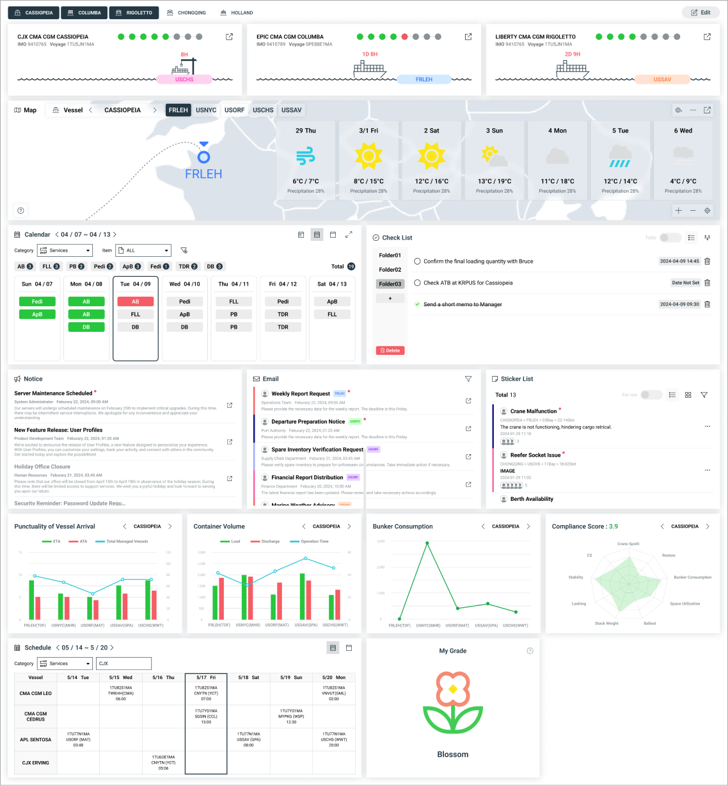
페인포인트
데이터 분산 및 실시간 가시성 부족
여러 시스템에서 데이터를 따로 관리하여, 전체 작업 상태를 실시간으로 확인하기 어려움.
작업 진행 상황 파악의 어려움
각 작업의 진행 상태와 문제점을 효율적으로 추적할 수 있는 도구 부족.
제공된 솔루션
통합 대시보드 설계
모든 데이터를 한 곳에서 확인할 수 있도록 통합 플랫폼 제공.
개인화 위젯
사용자별 맞춤형 데이터 제공으로 업무 관련 핵심 정보를 쉽게 확인 가능.
사용자 반응
"대시보드 도입으로 모든 데이터를 한곳에서 관리할 수 있게 되어, 업무가 훨씬 체계적이고 효율적으로 진행됩니다."
"실시간으로 데이터를 확인하고 즉각적으로 대응할 수 있어 작업 시간과 오류가 크게 줄었습니다."
SOLUTION 03
대시보드의 부재
기능
사용자가 선택한 선박의 데이터만 표시하여 불필요한 정보 제거.
사용자 반응
"필요한 정보에만 집중할 수 있어 작업 효율이 높아졌습니다."
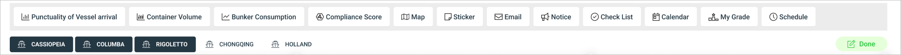
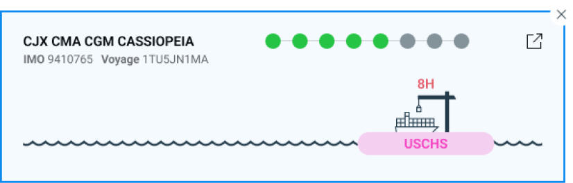
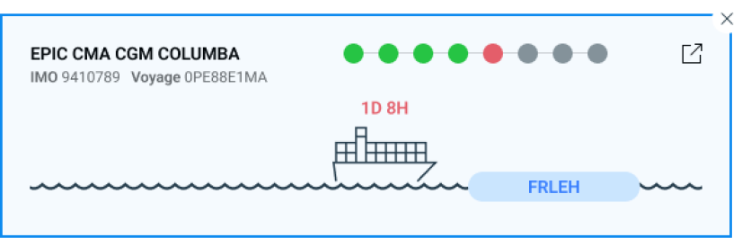
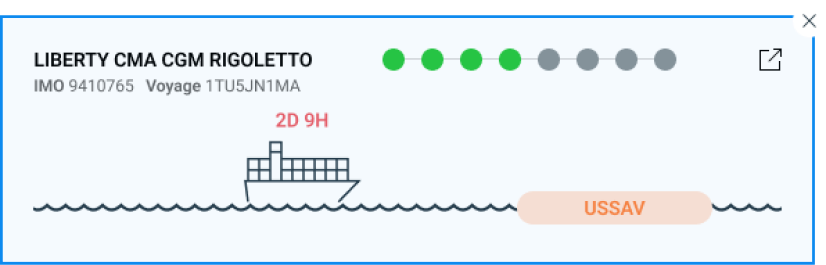
기능
위젯의 크기와 위치를 조정하며 필요에 따라 활성화/비활성화 가능.
사용자 반응
"필요한 정보만 보기 쉽게 배치할 수 있어 작업 환경이 개선되었습니다."
SOLUTION 03
대시보드의 부재
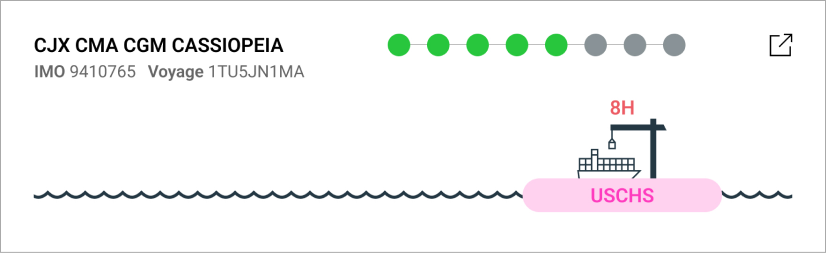
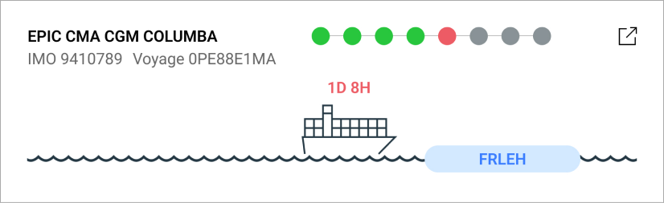
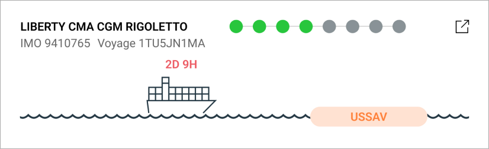
기능
선박의 위치와 서류 진행 상태를 실시간으로 추적.
사용자 반응
"모든 작업 흐름을 한눈에 파악할 수 있어 큰 도움이 됩니다."
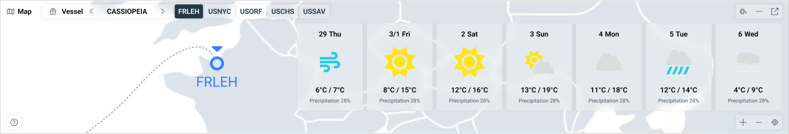
기능
선박의 위치, 경로, 날씨 정보를 실시간으로 제공.
사용자 반응
"상황을 빠르게 파악해 신속한 의사결정을 내릴 수 있습니다."
SOLUTION 03
대시보드의 부재
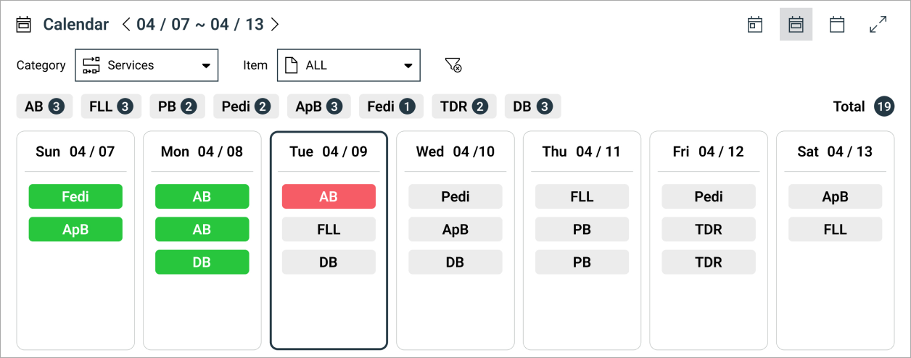
기능
서류 상태와 일정을 색상으로 구분하여 시각적으로 제공.
사용자 반응
"일정을 한눈에 확인할 수 있어 업무 계획이 수월해졌습니다."
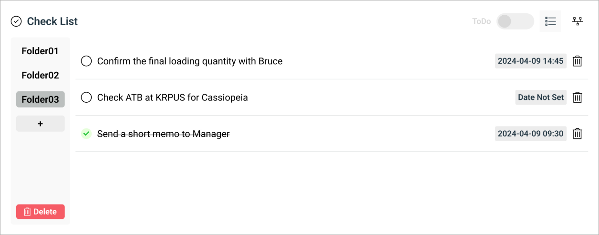
기능
개인화된 할 일 목록을 생성, 수정, 삭제하며 관리 가능.
사용자 반응
"작업 누락을 방지하고 모든 업무를 체계적으로 관리할 수 있습니다."
SOLUTION 03
대시보드의 부재
기능
공지사항과 이메일, 메모를 통합하여 관리.
스티커를 플래닝 작업에 붙여 협업 시 중요 정보를 빠르게 공유.
사용자 반응
"모든 커뮤니케이션을 한곳에서 관리해 효율성이 크게 향상되었습니다."
"스티커 기능 덕분에 팀원 및 협력업체와 이슈를 빠르고 명확하게 공유할 수 있었습니다."
SOLUTION 03
대시보드의 부재
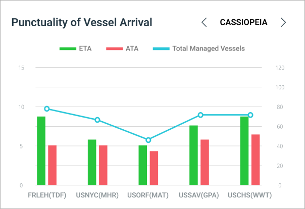
기능
ETA와 실제 도착 시간의 차이를 분석하여 시간 엄수율을 시각화.
사용자 반응
"예상 도착 시간을 정확히 예측할 수 있어 일정 조정이 원활합니다."
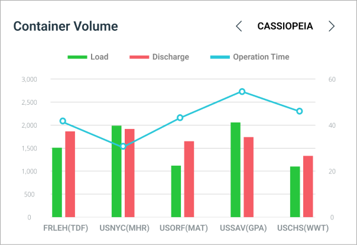
기능
선박의 컨테이너 적재 현황을 실시간으로 시각화.
사용자 반응
"적재 현황을 쉽게 파악해 물류 관리를 효율적으로 할 수 있습니다."
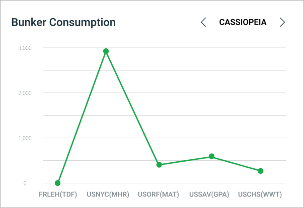
기능
연료 소비 패턴을 시각화하여 효율성 분석 지원.
사용자 반응
"연료 소비를 관리해 비용을 절감할 수 있었습니다."
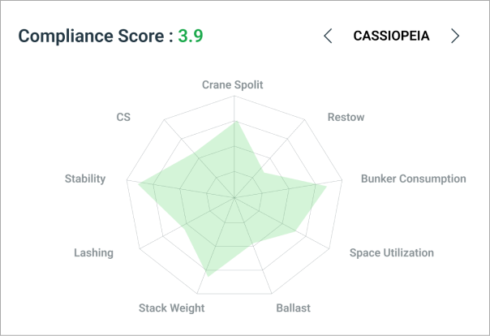
기능
선박의 규제 준수 상태를 방사형 차트로 제공.
사용자 반응
"규제 준수 상태를 명확히 파악해 리스크를 미리 방지할 수 있습니다."
SOLUTION 03
대시보드의 부재
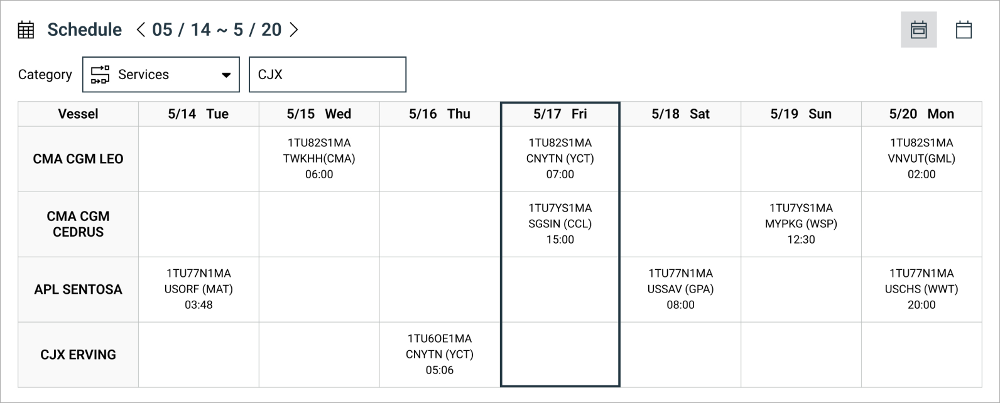
기능
항구 도착 시간과 선박 경로를 달력 형태로 제공.
사용자 반응
"항구 일정 관리를 쉽게 할 수 있어 예상 지연에 신속히 대응할 수 있습니다."
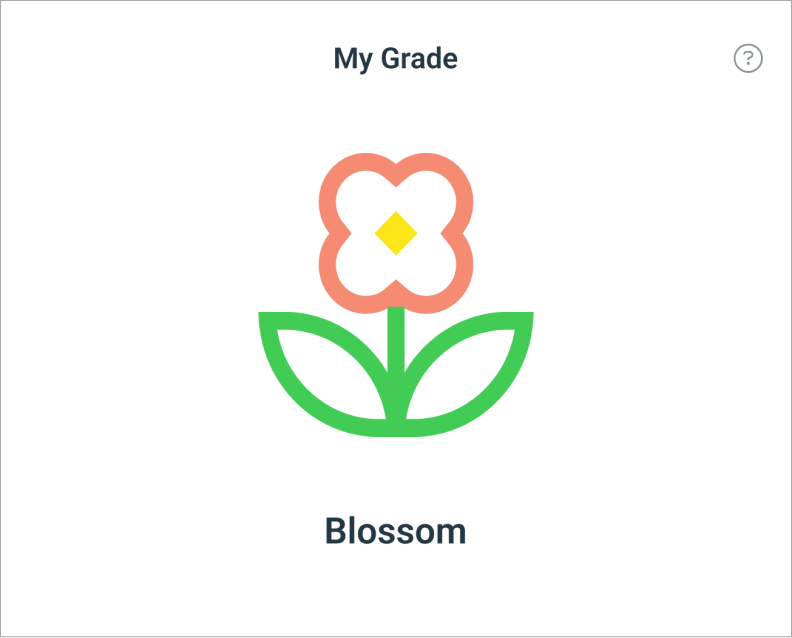
기능
Gamification 요소로 사용자 등급 시스템 제공.
사용자 반응
"등급 상승으로 작업에 대한 동기부여가 높아졌습니다."
SOLUTION 03
대시보드의 부재
대시보드 도입 후 업무 처리 속도 만족도
기존 시스템에 비해 StowGenie 대시보드 도입 후
업무 처리 속도에 대해 얼마나 만족하시나요?
대시보드 도입 후 업무 정확도 만족도
기존 시스템에 비해 StowGenie 대시보드 도입 후
업무 상태나 데이터를 실시간으로 추적하는
효율성에 얼마나 만족하시나요?
SOLUTION 04
가독성 낮은 데이터 - Timeframe
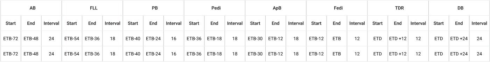
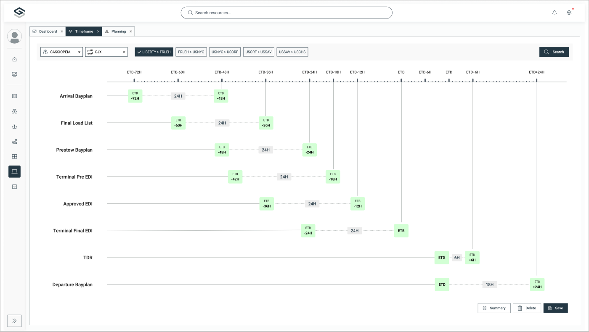
페인포인트
작업 진행 상태의 불명확성
각 서류의 처리 단계를 추적하고 시간 간격을 명확히 파악하기 힘듦.
제공된 솔루션
시각적 시간 설정
ETB(Estimated Time of Berthing) 및 ETD(Estimated Time of Departure)를 기준으로 각 서류의 처리 단계를 타임라인 형식으로 시각화.
드래그 앤 드랍 기능
서류별 처리 시간을 직관적으로 설정하여 복잡한 작업 시간 관리를 간편하게 개선.
타임바와 차트 레이아웃
단계별 처리 시간과 간격을 한눈에 확인하고 조정 가능.
사용자 반응
"타임프레임 기능 덕분에 복잡했던 시간 관리를 직관적이고 효율적으로 처리할 수 있게 되었습니다."
"드래그 앤 드랍 방식으로 서류 처리 시간을 빠르게 조정할 수 있어 작업이 훨씬 편리해졌습니다."
SOLUTION 04
가독성 낮은 데이터 - Timeframe
선박별 시간 조정 편리성
Timeframe을 사용하여 선박별 서류 준비
시간을 조정하는 과정이 편리한가요?
Timeframe 시각적 표현과 설정의 직관성
Timeframe 기능에서 서류 준비 시간을
설정하는 과정이 얼마나 직관적이고 쉬운가요?
SOLUTION 04
가독성 낮은 데이터 - Workflow
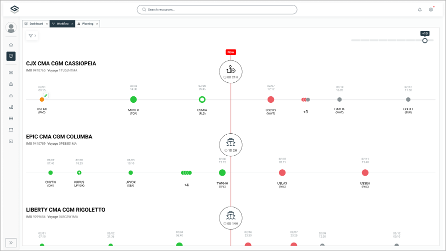
페인포인트
복잡한 데이터 관리
기존 시스템에서는 엑셀 표로 관리 및 데이터를 공유해야 했기 때문에 선박 도착 예정일, 서류 상태, 포트 정보 등의 업무 효율성이 낮음.
실시간 데이터 확인 불가
실시간 서류 상태 및 일정 관리가 어려워 작업 진행 상태를 한눈에 파악하기 힘듦.
제공된 솔루션
Workflow 페이지 도입
선박 도착 예정일, 서류 상태, 포트 정보를 타임라인 형식으로 시각화하여 실시간으로 확인 가능.
데이터 필터링 및 검색 기능
날짜, 상태(At Sea, At Port, Alert), 포트명, 선박명을 기반으로 필요한 데이터만 선별하여 관리.
빠른 파일 관리 및 연동
서류를 업로드/다운로드하고, 플래닝 페이지로 바로 이동할 수 있는 기능 제공.
사용자 반응
"이메일 업무량이 크게 줄고, 서류 관리와 진행 상황을 실시간으로 확인할 수 있어 업무 효율성이 눈에 띄게 향상되었습니다."
"필터링 기능을 통해 필요한 정보만 빠르게 확인할 수 있어, 작업 속도가 빨라지고 정확성이 높아졌습니다."
"Workflow 페이지 덕분에 협업이 강화되고, 플래닝과 서류 관리가 더 체계적으로 이루어졌습니다."
SOLUTION 04
가독성 낮은 데이터 - Workflow
업무 속도 증가 여부 평가
이전 업무 방식과 비교했을 때
업무 속도가 증가했다고 생각하시나요?
Workflow 도입 후 업무 방식 변화 만족도
Workflow를 도입한 후,
이전 업무 방식보다 얼마나 향상되었나요?
SOLUTION 04
가독성 낮은 데이터 - Data Repository
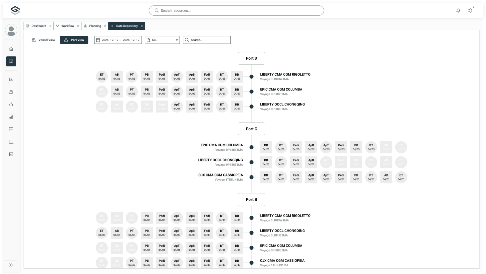
페인포인트
낮은 데이터 가독성
기존에 엑셀 파일을 폴더에 정리하여 데이터를 활용해야 했으며 선박 및 항구 데이터를 직관적으로 파악하기 어려움.
데이터 검색의 비효율성
특정 조건의 데이터를 찾는 데 많은 시간이 소요되었고, 업무 효율성이 크게 저하됨.
제공된 솔루션
Vessel View 및 Port View
선박과 항구 데이터를 시각적으로 쉽게 파악할 수 있도록 설계함.
업무 진행 상태 시각화
업무 진행 상태를 색상으로 구분하여 직관적으로 확인할 수 있어 업무 파악이 용이함.
검색 및 필터 기능
필요 데이터를 빠르게 검색하고 필터링할 수 있어 업무 효율성이 크게 향상됨.
사용자 반응
"필터와 검색 기능 덕분에 필요한 데이터를 찾는 시간이 크게 단축되었습니다."
"폴더에 들어가 파일 하나하나 확인할 필요 없이, 파일 상태를 쉽게 파악할 수 있어 효율성이 높아졌습니다."
SOLUTION 04
가독성 낮은 데이터 - Data Repository
Data Repository 사용의 직관성 및 편리성
Data Repository에서 서류를 찾고 관리하는 것이
얼마나 직관적이고 편리하다고 느끼셨나요?
편리함직관적이고
편리함보통비효율적임매우 비효율적임
Data Repository 사용 후 효율성 향상에 대한 만족도
Data Repository를 사용한 후,
업무 효율성이 얼마나 향상되었나요?
SOLUTION 04
가독성 낮은 데이터 - Loadlist
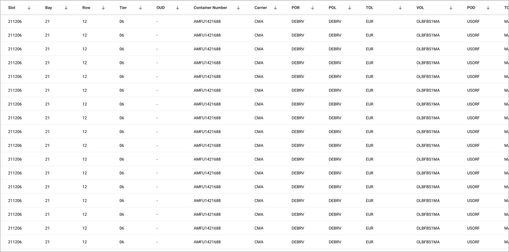
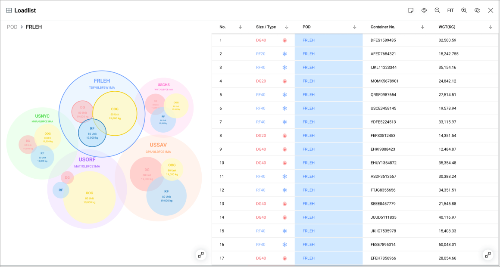
페인포인트
불필요한 데이터 과다
기존의 데이터는 30여 개의 컬럼으로 이루어져 있어, 중요 정보를 빠르게 확인하기 어려움.
시각적 구분의 부재
선적 계획 시 컨테이너 유형과 포트별 데이터를 직관적으로 파악할 수 있는 시각적 솔루션 부족.
위험물 컨테이너 식별 어려움
위험물(DG) 컨테이너를 신속히 식별할 수 있는 표시가 부족하여 작업 효율성 저하.
제공된 솔루션
컬럼 축소 및 핵심 정보 제공
기존 30여 개의 컬럼을 4개의 주요 컬럼(Size/Type, POD, Container No., WGT)으로 축소하고 기존 컬럼형식을 확인 가능하게 선택권을 줌.
버블 차트 도입
포트별 및 컨테이너 유형별 데이터를 버블 차트로 시각화하여 각 항목의 비중을 직관적으로 파악 가능.
시각적 강조
항구(POD)에 따른 배경 색상과 위험물(DG) 컨테이너 등 특수 컨테이너를 색상 및 아이콘을 통해 중요한 정보를 빠르게 식별 가능.
사용자 반응
"데이터가 간결해져서 주요 정보를 빠르게 확인할 수 있었고, 작업 속도가 크게 향상되었습니다."
"버블 차트 덕분에 포트별 컨테이너 분포를 한눈에 파악할 수 있어 계획 수립이 훨씬 직관적이고 용이해졌습니다."
"위험물 컨테이너를 강조해줘서 중요한 이슈를 놓치지 않고 빠르게 대응할 수 있었습니다."
SOLUTION 04
가독성 낮은 데이터 - Loadlist
기존 Loadlist 대비 업무 속도 향상
새로운 Loadlist 기능을 사용한 후,
업무 속도가 증가했다고 생각하시나요?
Loadlist 컬럼 축소와 버블차트 도입 후 데이터 확인의 편리함
새로운 Loadlist 기능을 사용한 후,
필요한 데이터를 확인하는 데 얼마나 편리해졌나요?
SOLUTION 05
AI를 활용한 데이터 - Bayplan Explorer
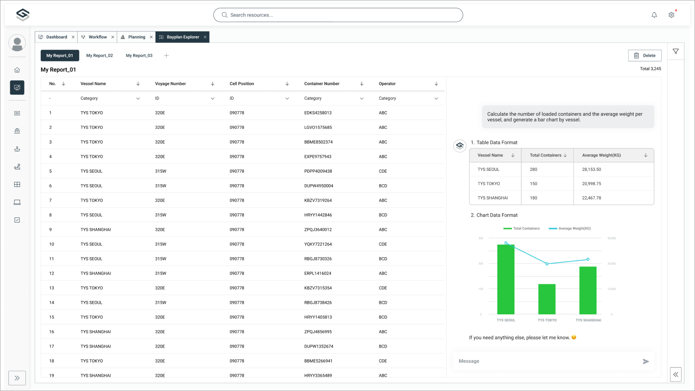
페인포인트
데이터 관리의 복잡성
기존 방식으로는 복잡한 데이터의 조회와 수정이 비효율적이며, 작업 정확성에 문제 발생.
반복 작업으로 인한 비효율성
데이터 분석과 CRUD(생성, 읽기, 수정, 삭제) 작업이 반복되어 업무 시간이 증가.
제공된 솔루션
AI 기반 데이터 검색 및 분석
사용자는 AI를 통해 필요한 데이터를 빠르게 검색하고, 데이터를 자동으로 요약 및 분석할 수 있음.
MyReport 기능
생성된 데이터 결과물을 MyReport_01과 같은 형식으로 저장 및 관리하여 반복 작업을 줄임.
사용자 반응
"AI를 통해 필요한 데이터를 빠르게 찾고, 요약 결과를 즉시 확인할 수 있어 업무 효율성이 크게 향상되었습니다."
"MyReport 기능 덕분에 중요한 정보를 쉽게 저장하고 관리할 수 있어, 이전 결과물에 빠르게 접근할 수 있습니다."
SOLUTION 05
AI를 활용한 데이터 - Bayplan Explorer
데이터 관리의 효율성 향상
AI 기반 데이터 검색 및 분석 기능을 사용한 후,
데이터 관리의 효율성이 얼마나 향상되었나요?
AI와의 상호작용을 통한 데이터 수정의 용이성
AI를 사용하여 데이터를 수정하는
과정이 얼마나 용이해졌나요?
SOLUTION 06
Gamification
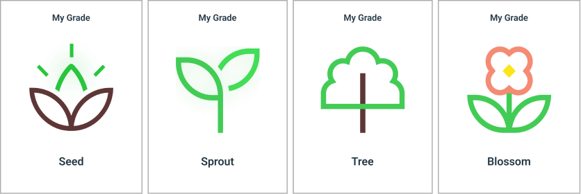
사용자의 등급은 4가지 유형으로 구분되며,
각 유형은 식물 성장의 다양한 단계를 은유적으로 나타냅니다.
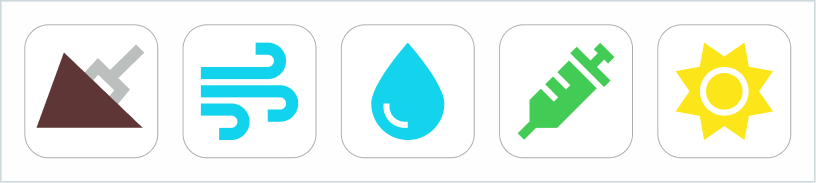
사용자는 StowGenie에서 작업하는 동안 무작위로 아이템을 만날 수 있습니다.
이러한 아이템을 수집함으로써 사용자는 성취도를 업그레이드할 수 있습니다.
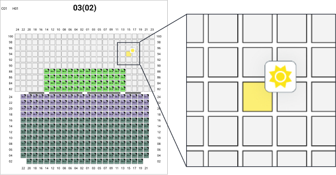
Planning 화면에 나타난 Gamification 요소
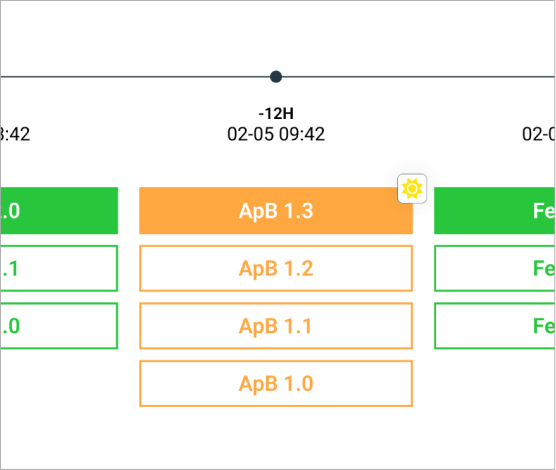
Workflow 화면에 나타난 Gamification 요소
페인포인트
업무 동기부여 부족
반복적인 작업으로 인해 사용자들이 업무에 쉽게 지루함을 느끼고 동기부여가 부족.
업무 중 즐거움 결여
작업 중 유쾌한 경험을 제공할 요소 부족으로 업무 만족도 저하.
제공된 솔루션
등급과 보상 시스템 설계
Seed, Sprout, Tree, Blossom의 네 단계 등급을 설정하고, 등급 상승 시 성취감과 보상 제공.
재료 수집 메커니즘
플래닝 및 서류 업로드 과정에서 랜덤으로 재료 아이콘(Sun, Soil, Wind, Water, Nutrient)을 수집하여 동기부여 제공.
Blossom 단계 특별 보상
최고 단계 달성 시, 사무실 꽃 배송 또는 고객사 브랜드 굿즈를 선택할 수 있는 보상 제공.
사용자 반응
"단계별 보상 시스템 덕분에 작업에 더 몰입하게 되었고, 성취감이 생겼습니다."
"작업할 때마다 얻는 랜덤 재료 덕분에 평범한 작업도 재미있게 느껴집니다."
"Blossom 단계에 도달해 실제 보상을 받는 것은 소속감을 높이고 업무를 더 즐겁게 만들었습니다."
SOLUTION 06
Gamification
Gamification 도입에 대한 긍정적인 반응
Gamification 기능 도입에
대해 전반적으로 어떻게 생각하시나요?
업무 동기부여 향상
Gamification 기능이 도입되고
업무에 대한 동기부여가 얼마나 향상되었나요?
RESULT
고객 피드백 종합 결과
RESULT
솔루션 적용 후 고객 반응
UI 변경
"새롭게 디자인된 UI 덕분에 데이터 접근이 훨씬 쉬워졌고, 직관적으로 각 정보를 파악할 수 있어 사용자 경험이 한층 향상되었습니다. 기존 복잡한 화면 구성 대신 깔끔하고 직관적인 인터페이스 덕분에, 처음 사용하는 사용자도 빠르게 적응할 수 있었어요. UI 개선이 업무 속도 향상에 직접적으로 기여하고 있어 매우 만족스럽습니다."
흩어진 기능 통합
"이전에는 여러 시스템과 페이지를 넘나들며 작업을 진행하느라 많은 시간이 소요됐습니다. 이번 통합 솔루션 덕분에 필요한 모든 기능을 한 곳에서 사용할 수 있어 업무 효율이 크게 증가했어요. 특히, 단일 플랫폼에서 스케줄 관리와 서류 처리, 커뮤니케이션까지 해결되니 협업 과정이 훨씬 간편해졌습니다. 이제 각 팀의 상태를 실시간으로 파악할 수 있어 커뮤니케이션 문제도 줄어들었습니다."
데이터 시각화
"이전에는 텍스트나 수치만으로 정보를 확인해야 해서 분석이 어려웠습니다. 새롭게 추가된 차트와 시각적 도구 덕분에 데이터를 한눈에 이해할 수 있고, 중요한 포인트를 빠르게 파악할 수 있어 작업 속도가 크게 향상됐습니다. 특히 다양한 차트로 중요 데이터를 직관적으로 표시해주어 보고서를 작성할 때도 훨씬 수월해졌습니다."
AI 기반 데이터 인사이트
"AI 기능이 포함되어 데이터를 효과적으로 분석할 수 있는 점이 아주 유용합니다. 데이터에 숨겨진 의미를 빠르게 찾아내고 예측할 수 있어, 의사 결정 과정에서 큰 도움을 받고 있습니다. 또한, 반복적인 데이터 분석과 패턴 인식이 자동으로 이루어져 예기치 못한 문제를 사전에 대비할 수 있어 안정성이 크게 향상되었습니다. AI 도구가 업무에 실질적으로 가치를 더해주고 있습니다."
RETROSPECT
회고
배운 점
대시보드 이해도 향상
데이터 시각화를 위한 대시보드 구성 요소와 사용자 요구에 맞춘 대시보드 디자인의 중요성을 깨달았습니다.
게이미피케이션
사용자 참여를 유도하기 위한 게이미피케이션 요소 도입의 필요성을 인식했습니다.
복잡한 프로토타입 제작
피그마를 활용하여 복잡한 프로토타입을 효과적으로 제작하는 기술을 향상시켰습니다.
커뮤니케이션의 중요성
해운항만 분야의 도메인 전문가분과의 소통을 통해 해당 도메인에 대한 깊은 이해를 얻었습니다. 또한 비전문가 입장에서 비효율적이라 느꼈던 부분을 무조건 편하고 직관적으로 개선한다는 것이 오히려 사용성을 떨어뜨리는 상황이 있을 수 있다는 것을 배웠습니다.
느낀 점
현업 전문가와의 만남을 통한 인사이트 확보
실제 현업에서 다양한 업체의 플래너들을 만나 그들의 인사이트를 얻는 것이 매우 유익했습니다. 그들과의 미팅을 통해 그들이 현재 사용하는 프로그램의 개선점과 새로운 기능에 대한 요구 사항을 파악했습니다.
사용자 중심 디자인 접근의 중요성 재확인
사용자 중심의 디자인 접근 방식을 강화하는 것이 얼마나 중요한지를 깨달았습니다.
회고
디자인 스프린트를 통한 빠른 피드백 수집과 협업 경험
디자인 스프린트를 진행하며 팀원들과의 협업을 통해 빠른 프로토타입 제작과 사용자 피드백 수집이 가능했습니다. 이 과정에서 유연한 사고와 적응력이 요구되었으며, 애자일 방법론의 효과를 체감했습니다.
고객 피드백을 반영한 기능 개선의 중요성 인식
디자인을 끝낸 후에도 고객의 피드백과 실제로 사용하면서 얻은 인사이트를 기반으로 한 기능 개선의 필요성을 느끼며 지속적인 업데이트가 중요하다는 점을 명확히 이해하게 되었습니다.
MUKI는 방카슈랑스 영업사원들을 위한 맞춤형 솔루션으로, 영업 현장에서의 주요 불편함을 해소하고 효율적인 영업 활동을 지원하는 모바일 애플리케이션입니다. 고객 정보 관리와 활동 기록, 판매 기회 확보 등을 간편하고 직관적으로 수행할 수 있도록 설계되었습니다.
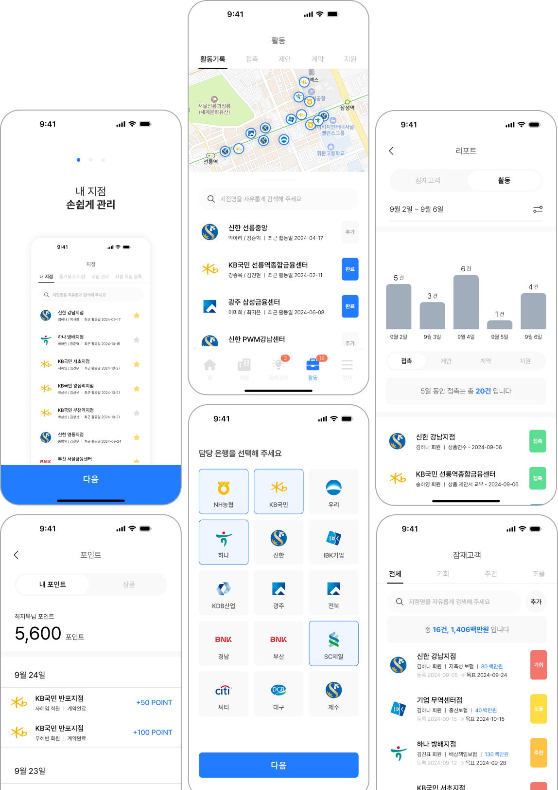
OTHER PROJECTS
기타 프로젝트 - mAOiA
mAOiA 솔루션은 해운사 및 항만 운영에서 출항 관련 데이터를 실시간으로 관리하고 데이터 기반의 분석 및 인사이트 제공을 통해 효율적인 출항 계획 및 운영 결정을 돕는 시스템입니다. 특히, 출항 관리, 특수 화물 관리, 컨테이너 배치 계획(베이플랜) 등의 기능을 자동화하고, 이를 시각화된 인사이트로 제공하여 관리자가 쉽게 분석할 수 있도록 지원하는 것이 핵심입니다.
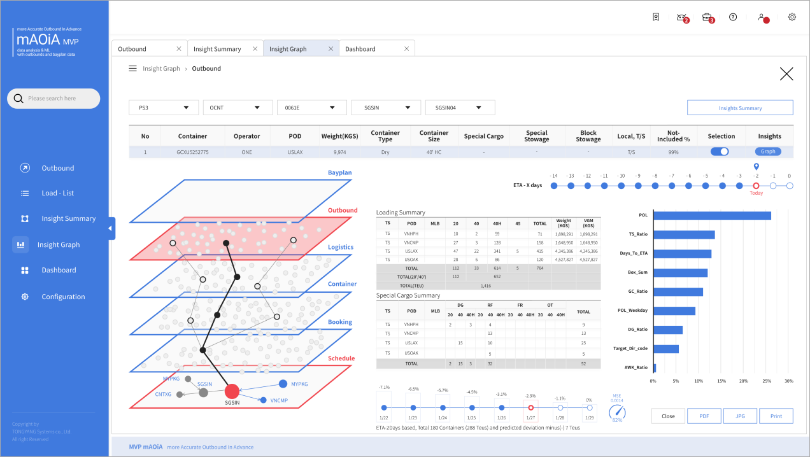
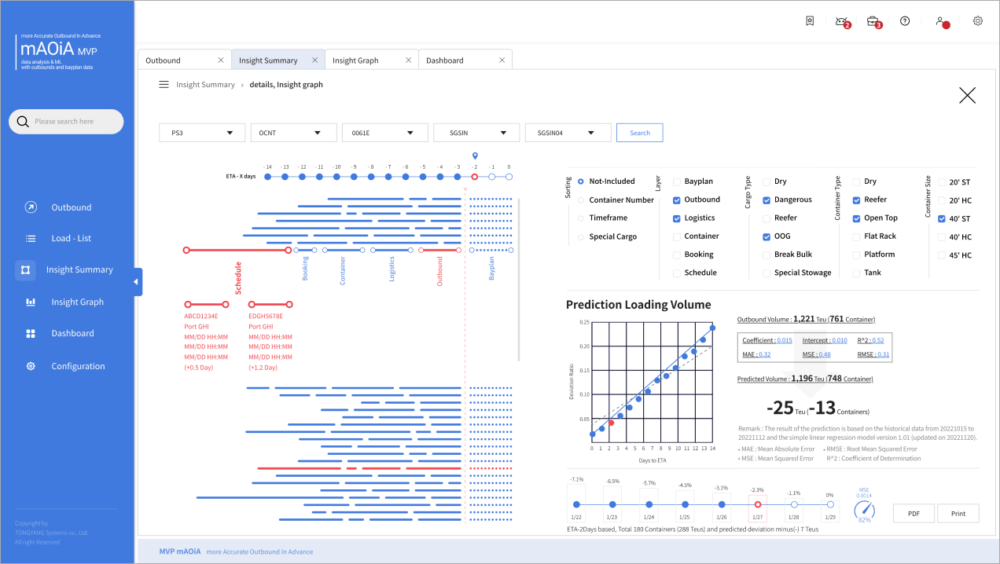
OTHER PROJECTS
기타 프로젝트 - JO
해운사와 항만이 복잡한 정산, 수익 분배, BSA 계약 관리, 할당 설정, 월간 정산, 그리고 데이터 검증을 효과적으로 관리하기 위한 종합 솔루션입니다. 특히 공동 운영 항로에서 여러 이해관계자와의 수익 및 비용 분배, BSA 관리 등을 자동화하고 모니터링하는 기능이 핵심입니다.
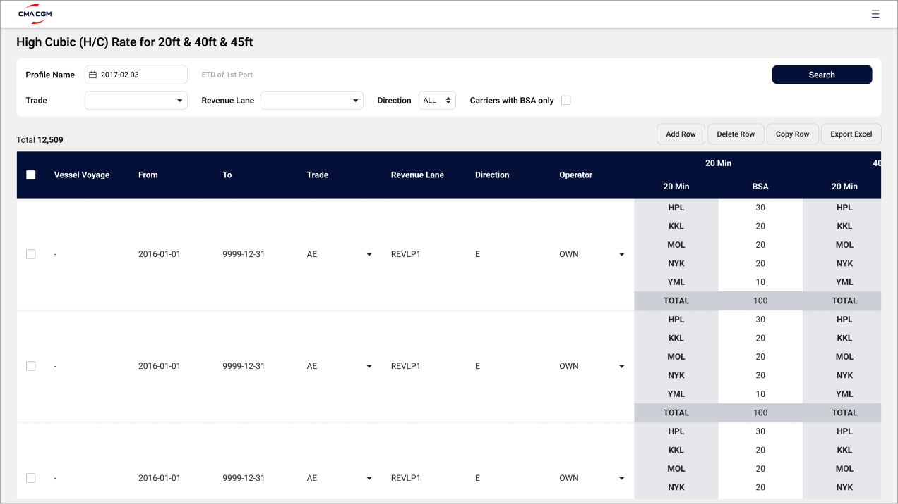
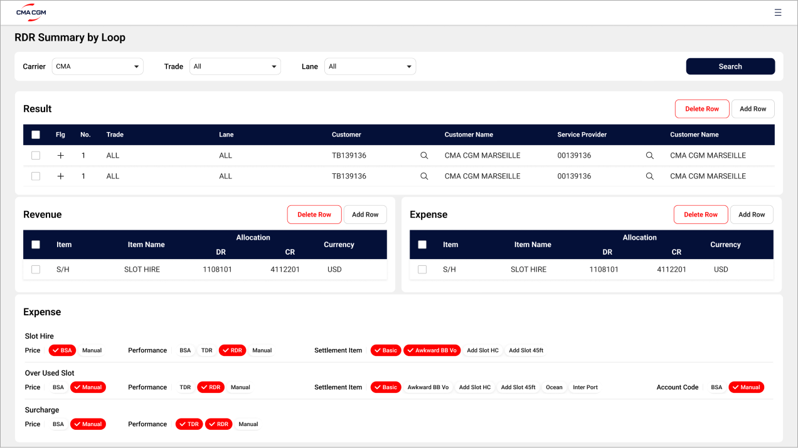
OTHER PROJECTS
기타 프로젝트 - NH총무 솔루션
이 솔루션 프로그램은 회사 차량, 휴무 일정, 그리고 다양한 자재들을 효율적으로 관리할 수 있도록 설계된 통합 관리 시스템입니다. 복잡한 자산 관리와 일정 조정 작업을 자동화하여 시간과 비용을 절감하고, 운영 효율성을 극대화하는 것이 핵심입니다.
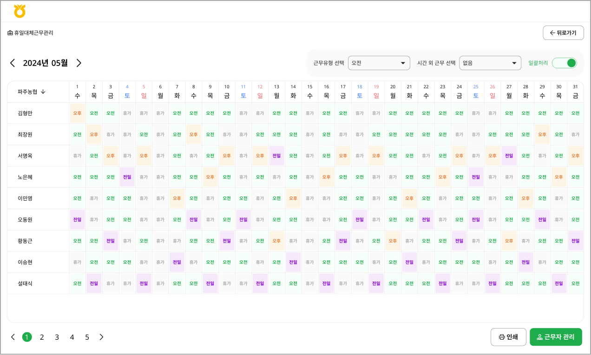
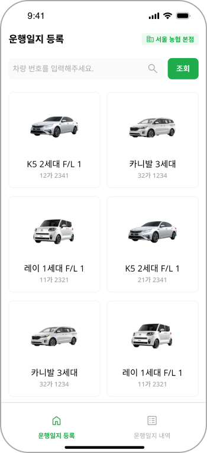
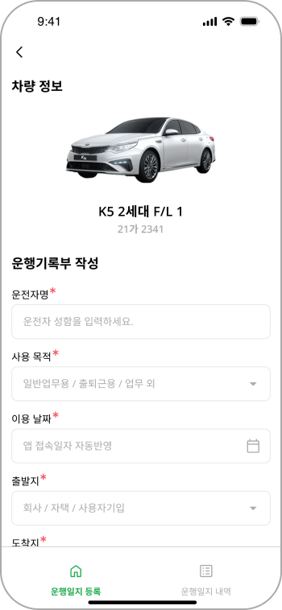
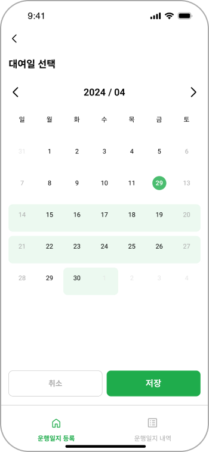
Personal Projects
개인 프로젝트 - Flora Fusion
Flora Fusion 솔루션은 화분과 정원 관리를 돕는 도구로, 물주기, 햇빛, 영양제, 거름갈기 등의 일정을 자동으로 관리해 줍니다. 사용자는 자신의 정원과 화분 사진을 SNS처럼 공유하고, 좋아요, 댓글, 공유 기능을 통해 소통할 수 있습니다. 또한, 가상 식물을 기르며 목표 달성 시 실제 화분을 받을 수 있고, 화분 관련 제품 구매 및 식물 정보 검색 기능도 제공하여 손쉽게 필요한 정보를 얻을 수 있습니다.
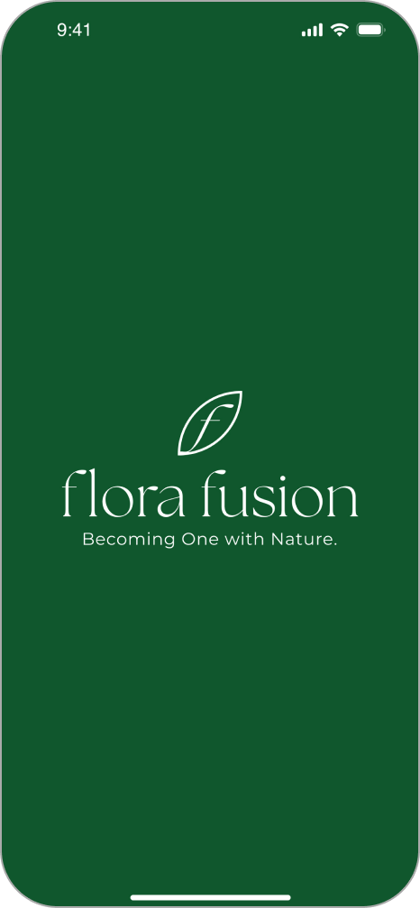
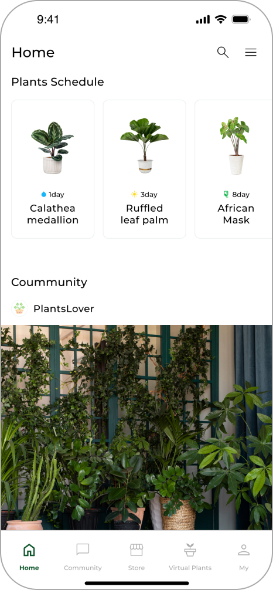
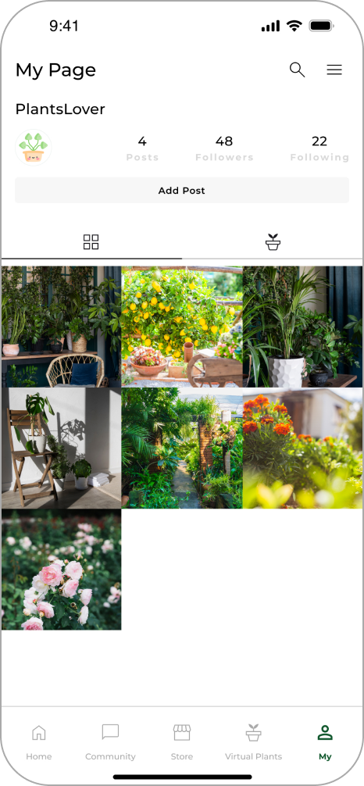
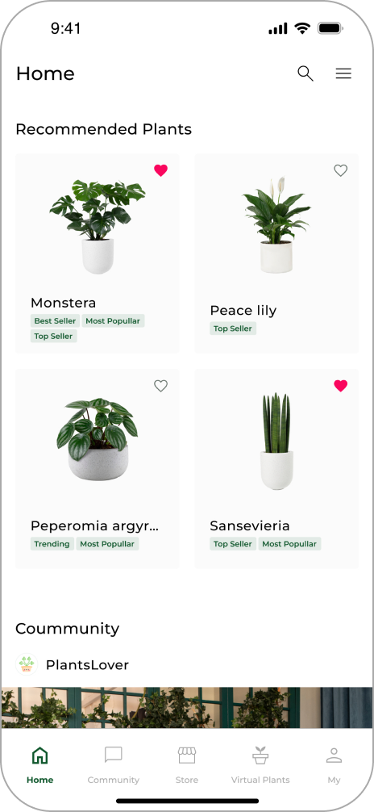
THANKS FOR READING
관심 가지고 읽어 주셔서 감사합니다.